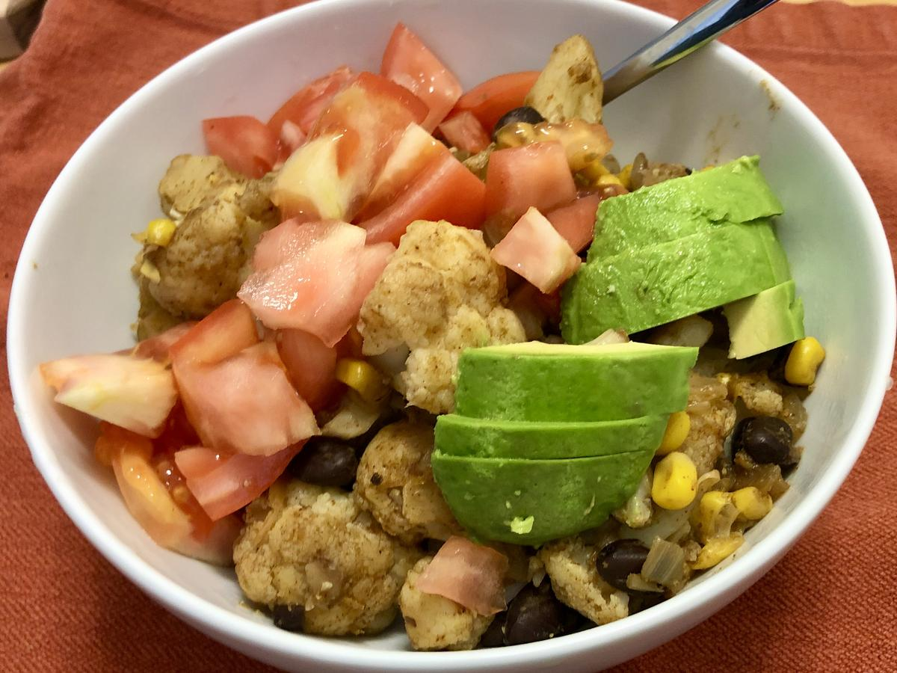

Based on https://www.mealime.com/recipes/roasted-cauliflower-black-bean-burrito-bow>425F with an olive oil and spice l-cilantro-lime-rice/7720. Cauliflower in Instant Pot inspired by https://www.pressurecookrecipes.com/instant-pot-cauliflower/
Personal rating: 5 / 5

1 head cauliflower
1 cup basmati rice, quinoa, etc.
1 yellow onion, diced
1 (15 oz) can black beans, rinsed
1 (15 oz) can corn, rinsed
Previously included 1 Tbsp chili powder and 1/2 tsp of the rest, but I calculated an approximate substitute based on: https://www.spendwithpennies.com/homemade-chili-powder
1 tsp smoked paprika
1 tsp garlic powder
1 tsp onion powder
3/4 tsp cumin
1/2 tsp cayenne pepper
1/2 tsp salt
1/4 tsp dried oregano
Note: this serves 4, so save one of each for the 2nd day
salsa
Pour 1 cup of water and place the trivet in the Instant Pot
Prep the spice mix
In a large skillet, on medium heat, saute the onion with half of the spices
Rinse the rice and store in 2-cup measure (and save strainer for beans and corn)
Add the beans and corn to the pan
Once cool enough, remove the remaining leaves, chop the cauliflower into bite size pieces, and add to the pan
Serve in bowls with diced toppings